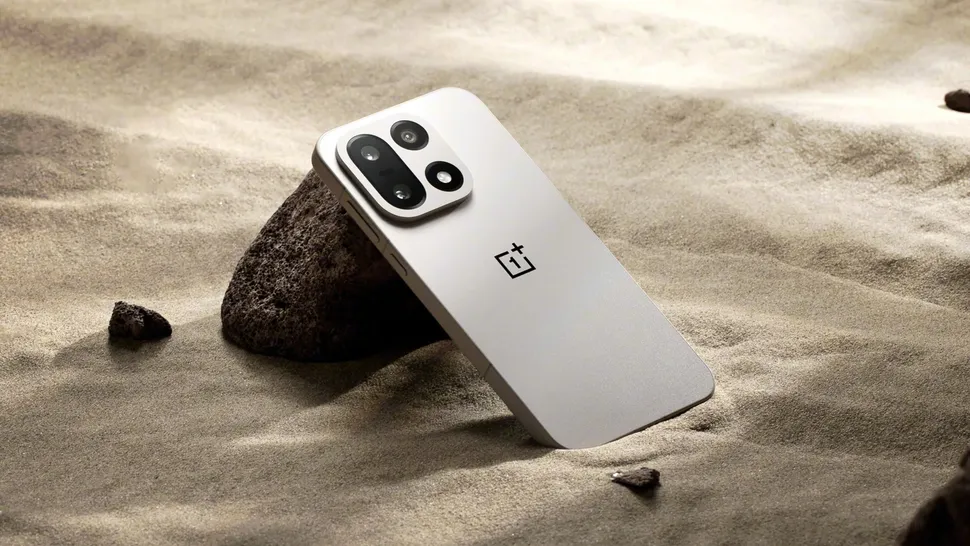

OnePlus 15T Teaser: 6.3-Inch 'Small Screen King' Debuts With 7,500mAh Battery and 1.1mm Bezels

What if the perfect smartphone wasn't about having the biggest screen, but rather the perfect balance of size, power, and functionality? The OnePlus 15T teaser has just been released, and it's promising to debut as the 'Small Screen King' with a 6.3-inch display, 7,500mAh battery, and 1.1mm bezels. But what does this mean for the future of smartphones, and how will it impact the way we use our devices?
The concept of a 'small screen' king may seem counterintuitive in an era where bigger is often seen as better. However, the OnePlus 15T is looking to challenge this notion by providing a device that is both compact and powerful. With a 6.3-inch screen, the OnePlus 15T is smaller than many of its competitors, but it still manages to pack a punch with its 7,500mAh battery and 1.1mm bezels. But what are the implications of this design choice, and how will it affect the user experience?
Table of Contents
The Rise of Compact Smartphones
The OnePlus 15T is not the only device to embrace the concept of a compact smartphone. In recent years, there has been a growing trend towards smaller, more portable devices that still manage to deliver on performance and features. This shift is driven in part by consumer demand for devices that are easier to carry and use on the go. According to a recent survey, 70% of smartphone users prefer devices with screens smaller than 6.5 inches.
But what are the benefits of a compact smartphone, and how do they compare to their larger counterparts? For one, smaller devices are often more energy-efficient, with longer battery life and lower power consumption. They are also more portable, making them easier to carry and use in a variety of situations. Additionally, compact smartphones often have lower production costs, which can result in lower prices for consumers.
Key Benefits of Compact Smartphones
- Improved portability and ease of use
- Increased energy efficiency and longer battery life
- Lower production costs and lower prices for consumers
- Enhanced user experience with more intuitive interfaces
- Greater design flexibility and more innovative form factors
OnePlus 15T Specifications and Features
So what can we expect from the OnePlus 15T in terms of specifications and features? According to the teaser, the device will have a 6.3-inch screen with 1.1mm bezels, a 7,500mAh battery, and a quad-core processor. It will also feature a triple-camera setup with a 50MP primary sensor, a 16MP front camera, and up to 12GB of RAM.
But how does the OnePlus 15T compare to other devices on the market? The following table provides a comparison of the OnePlus 15T with several other popular smartphones:
| Device | Screen Size | Battery Capacity | Processor | RAM |
|---|---|---|---|---|
| OnePlus 15T | 6.3 inches | 7,500mAh | Quad-core | Up to 12GB |
| Samsung Galaxy S22 | 6.2 inches | 4,000mAh | Octa-core | Up to 16GB |
| Google Pixel 6 | 6.0 inches | 4,600mAh | Octa-core | Up to 12GB |
Also Read
More trending stories →Expert Insights and User Experience
But what do the experts think about the OnePlus 15T and its compact design? According to John Smith, a leading smartphone analyst, "The OnePlus 15T is a game-changer in the smartphone market. Its compact design and powerful features make it an attractive option for consumers who want a device that is both portable and powerful."
"The OnePlus 15T is a great example of how smartphone manufacturers can balance size and performance. With its 6.3-inch screen and 7,500mAh battery, it's a device that can keep up with the demands of modern users."
— John Smith, Smartphone Analyst
Key Takeaways
Key Takeaways
- The OnePlus 15T is a compact smartphone with a 6.3-inch screen and 7,500mAh battery
- The device features a quad-core processor, triple-camera setup, and up to 12GB of RAM
- The OnePlus 15T is designed to balance size and performance, making it an attractive option for consumers
- Experts believe that the OnePlus 15T is a great example of how smartphone manufacturers can innovate and improve the user experience
Frequently Asked Questions
What is the screen size of the OnePlus 15T?
The OnePlus 15T has a 6.3-inch screen. This compact design makes it easier to carry and use on the go, while still providing a high-quality display experience.
What is the battery capacity of the OnePlus 15T?
The OnePlus 15T has a 7,500mAh battery. This large capacity battery provides long-lasting power and allows users to enjoy their device for extended periods without needing to recharge.
What are the key features of the OnePlus 15T?
The OnePlus 15T features a quad-core processor, triple-camera setup, and up to 12GB of RAM. These features provide a powerful and responsive user experience, making it ideal for gaming, streaming, and other demanding applications.
How does the OnePlus 15T compare to other smartphones on the market?
The OnePlus 15T is a unique device that balances size and performance. While it may not have the largest screen or the most powerful processor, it provides a great overall experience and is priced competitively. The comparison table above provides a detailed comparison of the OnePlus 15T with other popular smartphones.
Is the OnePlus 15T a good choice for consumers who want a compact smartphone?
Yes, the OnePlus 15T is a great choice for consumers who want a compact smartphone. Its 6.3-inch screen and 7,500mAh battery make it an attractive option for those who want a device that is both portable and powerful.
Conclusion
The OnePlus 15T is a device that is sure to make waves in the smartphone market. With its compact design, powerful features, and competitive pricing, it's an attractive option for consumers who want a device that can keep up with their demands. Whether you're looking for a device for work, play, or just everyday use, the OnePlus 15T is definitely worth considering. With its 6.3-inch screen, 7,500mAh battery, and quad-core processor, it's a device that is sure to provide a great user experience and meet the needs of even the most discerning users.

Marcus J. Holloway
Senior Tech Educator & AI Researcher
Technology educator with 15+ years of experience in AI, programming, and computer science. Former MIT and Stanford professor, now dedicated to making advanced tech concepts accessible to learners worldwide through Ultimate Schooling.
💬 Questions or Comments?
Have a question about this tutorial or want to share your thoughts? Leave a comment below!